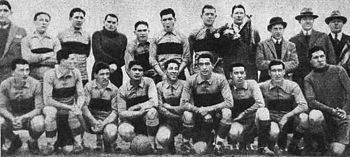
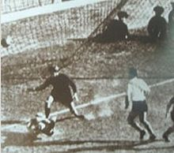

La historia del Club Atlético Boca Juniors transcurre desde 1905, año en que se fundó como club en Buenos Aires. El fútbol fue desde los comienzos la esencia del club y aunque posteriormente el crecimiento de la institución promovió el desarrollo de otras actividades como las Bochas o el Básquet, aquel permaneció como la disciplina deportiva sobre la cual se sustenta la entidad y  la que le valió su reconocimiento a nivel nacional e internacional. La historia de Boca Juniors se divide en dos períodos: la época amateur hasta 1930 y la profesional desde 1931 en adelante. Boca Juniors, con 68 títulos, es la 3ª institución con mayor cantidad de títulos empatando con Independientes internacionales oficiales en el mundo, al igual que el Milan de Italia con la misma cantidad. Solo son superados por Al Ahly Sporting Club de Egipto, que hasta el día de hoy posee 20 títulos internacionales (el último ganado en 2014, siendo ese año el más ganador del mundo),1 y el Real Madrid de España, luego de haber ganado la UEFA Champions League 2015-2016 y el Mundial de Clubes de la FIFA 2016, se convirtió en el club más ganador con 22 títulos internacionales oficiales en sus vitrinas.  A nivel local, cuenta con treinta y dos campeonatos de primera división (veintiséis de la era profesional y seis de la era amateur)2 y también con doce copas nacionales.3 Asimismo, es el equipo argentino con más cantidad de títulos oficiales sumando los torneos de liga, las copas nacionales de la AFA y las copas internacionales de la Conmebol, con sesenta y un conquistas. Además, sumando las Copas rioplatenses cuenta con un total de 66 títulos oficiales. También tiene un título de honor entregado por la AFA en honor a la gira europea del club en 1925, siendo el club más ganador en la historia del fútbol argentino. Entre sus principales directores técnicos se encuentran Alfio Basile, Juan Carlos Lorenzo, Carlos Bianchi, Ernesto Lazzatti, Mario Fortunato, Alfredo Garasini, Alfredo Di Stéfano, Óscar Washington Tabárez, Miguel Ángel Russo y Julio César Falcioni. Boca Juniors fue fundado en Buenos Aires el 3 de abril de 1905, en una década fundacional en la que se crearon no menos de 300 clubes de fútbol.6 Para entonces hacía casi cuarenta años que se practicaba el fútbol en la Argentina y catorce años desde la creación de la liga amateur, la más antigua del mundo luego de la inglesa.7 La fundación de Boca Juniors fue obra de seis adolescentes, hijos de italianos y vecinos de La Boca, barrio de trabajadores inmigrantes y fuerte identidad genovesa («xeneize» en dialecto): Esteban Baglietto, Alfredo Scarpati, Santiago Sana, Tomás Movio, los hermanos Juan Antonio Farenga y José Teodoro Farenga, Luis De Harenne y otros.8 Baglietto, Scarpatti y Sana, eran compañeros en la Escuela Superior de Comercio (Carlos Pellegrini desde 1908), ubicada entonces en la calle Bartolomé Mitre 1364. Allí tenían como profesor de educación física, al irlandés Paddy MacCarthy, uno de los precursores del boxeo en Argentina, quien también había sido futbolista y que inculcaba en sus alumnos el valor del deporte, a la vez que les enseñaba las técnicas del boxeo y del fútbol.9 El director del colegio, el profesor Santiago Fitz Simon, fue uno de los pioneros en la Argentina, en la inclusión de la educación física y del deporte, como disciplina sistemática en la educación de los jóvenes